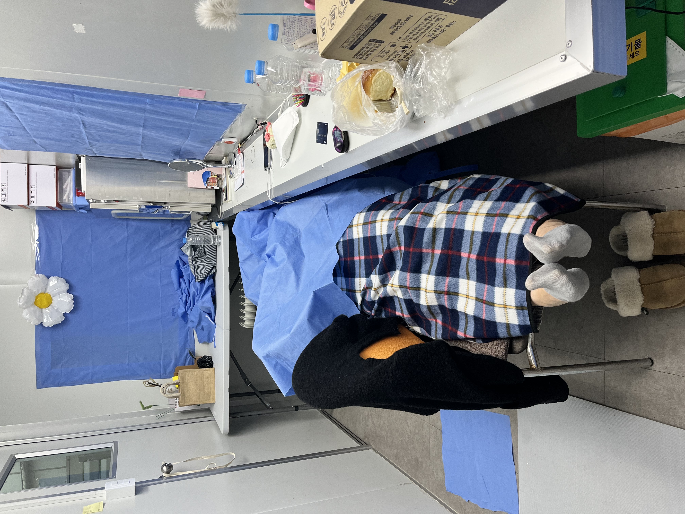

이혜민님의 mbti는 ENFJ입니다.
ENFJ는 사회성이 높고 다른 사람들과의 상호작용을 중요하게 생각하는 사람들을 나타내는 Myers-Briggs 성격 유형 중 하나입니다. 이러한 유형의 사람들은 타인에게 에너지를 얻으며, 자신들의 관계와 사회적 상호작용을 매우 중요하게 여깁니다.
ENFJ의 주요 특징 사교성이 높음: ENFJ는 사람들과 함께 시간을 보내는 것을 좋아합니다. 그들은 대화를 나누며 다른 사람들과 어울리는 것을 즐기고, 주변의 사람들에게 관심을 가집니다. 감성적: ENFJ는 감성적이며 자신의 감정을 자주 드러냅니다. 그들은 다른 사람들의 감정도 쉽게 인식하고 이해합니다. 동정심이 강함: ENFJ는 다른 사람들의 감정과 생각을 이해하며, 상대방의 입장에서 생각해볼 수 있습니다. 그들은 이러한 동정심을 기반으로 타인을 돕고 지원하며, 타인의 복지를 중요하게 여깁니다. 리더십 특성: ENFJ는 타인을 이끄는 데 탁월한 능력을 갖고 있습니다. 그들은 타인들의 역량을 파악하고 이를 활용하여 효과적인 팀을 구성하며, 그룹 내에서의 조화를 이끌어냅니다. 자신의 원칙과 가치관을 중요시함: ENFJ는 자신의 가치관과 원칙을 중요하게 여기며, 이를 바탕으로 행동합니다. 그들은 자신의 믿음에 따라 일관성 있게 행동하며, 타인들도 이를 따르도록 영향력을 미칩니다. 고집이 강함: ENFJ는 자신의 목표를 달성하기 위해 노력하는 것을 좋아합니다. 때로는 이러한 노력이 고집으로 비치기도 하지만, 그들은 이러한 열정과 의지력을 바탕으로 타인들을 동기부여하고 이끌어냅니다.